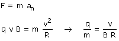
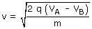
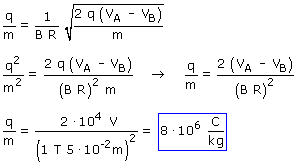

La razón q/m es la relación entre la carga sin signo y la masa de la partícula, así que el signo de la carga es indiferente y por tanto supondremos que la partícula tiene carga positiva.
Punto de vista: La partícula se mueve en el plano de la pantalla y el campo magnético es perpendicular a ella y está dirigido hacia afuera
La partícula sufrirá una fuerza q·v·B (Módulo), perpendicular a la velocidad y al campo y su trayectoria será una circunferencia
|
|
Ecuación de la Dinámica:  En la expresión del módulo de la fuerza la carga se pone sin signo |

La velocidad con que la partícula entra en el campo magnético vale:

Sustituyendo resulta:
